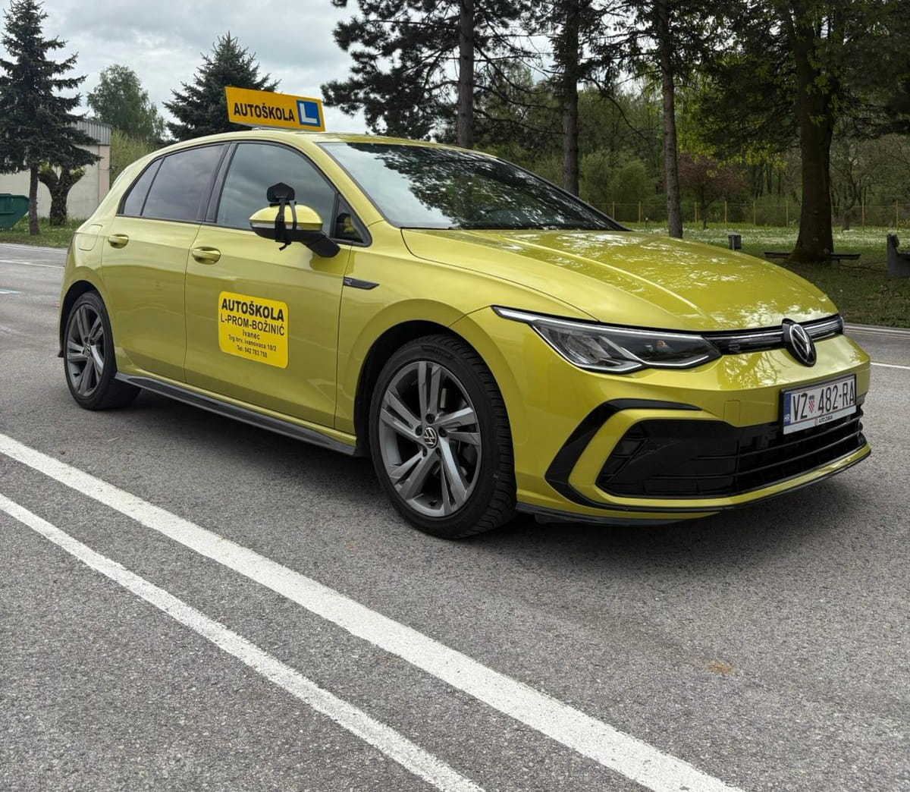

B
Kategorija B

Što obuhvaća?
Motorna vozila čija najveća dopuštena masa ne prelazi 3.500 kg i koja su dizajnirana za prijevoz najviše 8 putnika, ne računajući sjedalo za vozača. Motorna vozila ove kategorije mogu biti u kombinaciji s priključnim vozilom čija najveća dopuštena masa ne prelazi 750 kg.
Godine?
- Za upis: 17 godina i 6 mjeseci
- Za polaganje ispita vožnje: 18 godina
Osposobljavanje?
- Teorijski dio: 30 nastavnih sati iz prometnih propisa
- Praktični dio: 35 sati vožnje
- Prva pomoć: predavanja iz Pružanja prve pomoći provodi Gradsko društvo Crvenog križa Ivanec